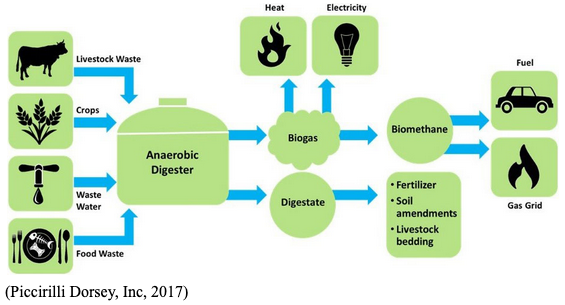

Geothermal energy is energy that’s harnessed from the earth's heart and produces little to no ghg emissions. We have many geothermal heat pumps which cycles water and geothermal energy through pipes underground. The pipes are not deep enough to go through bedrock and they are well insulated to prevent chemicals getting in the ground. Every house, business or any building that requires heat has a geothermal heat pump (Sustainable Energy Department, n.d.).
Around the world food waste contributes to about 8% of greenhouse gas emissions. To combat this, we turn food waste into biofuel which provides energy for transportation. At the moment, this process is not completely carbon neutral but it has less of a carbon footprint than food waste does and we are currently working on improving our methods (Friedlander, 2017).
The process of converting food waste to biofuel begins with extracting the energy from the food waste. This happens before anaerobic digestion by using hydrothermal liquefaction. Hydrothermal liquefaction liquifies the food waste and heats it until it is reduced to a crude bio-oil which is then refined to biofuel. After this process, there is still remaining food waste left in an aqueous state. The leftover waste is anaerobically digested by microbes to convert the waste to biomethane (Friedlander, 2017).
We have lots of funding towards public transportation to limit the number of cars on the streets. The public transportation options are available all throughout the city for free. Public transportation is fueled by the energy generated from food waste.